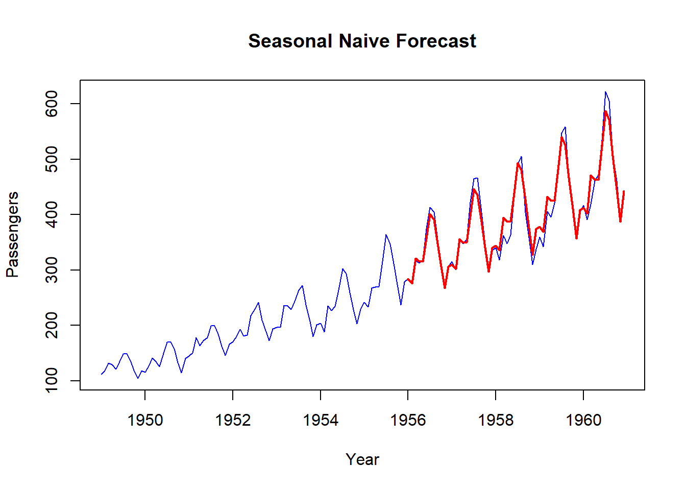

Chapter 4 Time Series Forecasting
4.1 Introduction
- The Forecast package is the most complete forecasting package available on R or Python.
4.2 Performance metrics
4.2.1 Forecast errors
A forecast “error” is the difference between an observed value and its forecast. Here “error” does not mean a mistake, it means the unpredictable part of an observation.
4.2.2 R-squared
\[R^2 = 1 - \frac{SS_{res}}{SS_{tot}}\]
where \(SS_{res}\) is the sum of squared residuals from the predicted values and \({SS_{tot}\) is the sum of squared deviations of the dependent variable from the sample mean. It means how much of the variance in the dependent variable can explain the variance in the independent variable. High value means the variance in the model is similar to the variance in the true values and if the R2 value is low it means that the two values are not much correlated.
The important point to note in the case of R-squared is that, it does not show if the model is satisfactory future predictions or not. It shows if the model is a good fit observed values and how good of a “fit” it is. High \(R^2\) means that the correlation between observed and predicted values is high.
4.2.3 Mean Absolute Error (MSE)
Mean absolute error is the average of the absolute values of the deviation. This type of error measurement is useful when measuring prediction errors in the same unit as the original series. See the below formula
\[MAE = \frac{\sum_{i = 0}^{n} |y_i - \hat{y_i}|}{n}\] Thus MAE will tell you how big of an error can you expect from the forecast on average.
4.2.4 Median Absolute Error (MedAE)
Median absolute error(MedAE) is similar to the MAE. To calculate MedAE, take the absolute differences and then find the median value.
\[MedAE = median(|y_1 - \hat{y_1}|,|y_2 - \hat{y_2}|,...,|y_n - \hat{y_n}|)\]
Using median is an extreme way of triming extreme values. Hence median absolute error reduces the bias in favor of low forecasts.
4.2.5 Mean Squared Error (MSE)
The mean squared error is the average of the square of the forecast error. As the square of the errors are taken, the effect is that larger errors have more weight on the score.
\[MSE = \frac{\sum_{i = 0}^{n} (y_i - \hat{y_i})^2}{n}\]
Since both MSE and RMSE takes the square of the errors, outliers will have a huge effect on the resulting error.
4.2.5.1 Mean Absolute Percentage Error (MAPE)
As this is a percentage error and hence gives a good idea of the relative error. Percentage errors have the advantage of being unit-free, and so are frequently used to compare forecast performances between data sets.
\[MAPE = \frac{100%}{n}\sum_{i = 1}^{n} \frac{y_i - \hat{y_i}}{y_i}\]
4.2.6 Application
library(forecast)
library(MLmetrics)##
## Attaching package: 'MLmetrics'## The following object is masked from 'package:base':
##
## Recalldata=AirPassengers
#Create samples
training=window(data, start = c(1949,1), end = c(1955,12))
validation=window(data, start = c(1956,1))4.3 Naive methods
Any forecasting method should be evaluated by being compared to a naive method. This elps ensure that the efforts put in having a more complex mdoel are worth in terms of performance:
- Simple naive: the forecast for tomorrow is what we are observing today.
- Seasonal naive: the forecast of tomorrow is what we observed the week/mont/year (depending what horizon we are working with) before.
naive = snaive(training, h=length(validation))
MAPE(naive$mean, validation) * 100## [1] 27.04689That gves us a MAPE of 27.04%. That is the score to beat.
plot(data, col="blue", xlab="Year", ylab="Passengers", main="Seasonal Naive Forecast", type='l')
lines(naive$mean, col="red", lwd=2)4.4 Exponential smoothing
Forecats produced using exponential smoothing methods are weighted average of past observations, with the weights decaying exponentially as the observations get older. In other words, the more recent the obserbation the higher the associated weight.
Simple, Double and Triple exponential smoothing can be performed using the HoltWinters() function.
4.4.1 State Space Models
With the Forecast Package, smoothing methods can be placed within the structure of state space models. By using this structure, we can find the optimal exponential smoothing model, using the ets function.
ets_model = ets(training, allow.multiplicative.trend = TRUE)
summary(ets_model)## ETS(M,Md,M)
##
## Call:
## ets(y = training, allow.multiplicative.trend = TRUE)
##
## Smoothing parameters:
## alpha = 0.6749
## beta = 0.0082
## gamma = 1e-04
## phi = 0.98
##
## Initial states:
## l = 119.9101
## b = 1.0177
## s = 0.9065 0.7973 0.9184 1.0524 1.1863 1.1987
## 1.0896 0.9798 0.9957 1.046 0.9167 0.9126
##
## sigma: 0.0395
##
## AIC AICc BIC
## 726.4475 736.9706 770.2022
##
## Training set error measures:
## ME RMSE MAE MPE MAPE MASE ACF1
## Training set 0.9845273 7.241276 5.726611 0.2712157 2.907857 0.2145244 0.0453492We see ETS (M, Md, M). This means we have an ets model with multiplicative errors, a multiplicative trend and a multiplicative seasonality. Basically, mutliplicative means that the parameter is “amplified” over time.
Here is how to forecast using the estimated optimal smoothing model:
ets_forecast = forecast(ets_model, h=length(validation))
# plot
plot(data, col="blue", xlab="Year", ylab="Passengers", main="Seasonal Naive Forecast", type='l')
lines(ets_forecast$mean, col="red", lwd=2)# error
MAPE(ets_forecast$mean, validation) *100## [1] 12.59147We see that the upward trend in demand is being capture a little bit (far from perfect, better than naive). It gives an MAPE of 12.6%.
4.4.2 Double seasonal Holt-Winters
The ets function only allows for one seasonality. Sometimes, the data we have can be composed of multiple seasonalities (monthly and yearly for instance).
Double Seasonal Holt-Winters (DSHW) allows for two seasonalities: a smaller one repeated often and a bigger one repeated less often. For the method to work however, the seasonalities need to be nested, meaning one must be an integer multiple of the other (2 and 4, 24 and 168, etc.).
The code here is a bit different since we need to specify the lenghts of our two seasonalities (which is not always something we know) and the forecast is computed directly when creating the model with the dshw function.
dshw_model = dshw(training, period1=4, period2 = 12, h=length(validation))
MAPE(dshw_model$mean, validation)*100## [1] 3.27219# plot
plot(data, col="blue", xlab="Year", ylab="Passengers", main="Seasonal Naive Forecast", type='l')
lines(dshw_model$mean, col="red", lwd=2)
We get a MAPE of 3.7% with this method!
4.5 ARIMA/SARIMA models
ARIM models contain 3 things:
- AR (p): Autoregressive part of the model. Means that we use p past observations from the timeseries as predictors
- Differenciating (d): Used to transform the timeseries into a strationary one by taking the differences between successive observations at appropriate lags (d).
- MA (q): uses q past forecast errors as predicators
That’s it for ARIMA but if you know the data you have is seasonal, then you need more. That’s where SARIMA comes into play. SARIMA adds a seasonal part to the model.
The auto.arima function can be used to return the best estimated model. Here is the code:
arima_optimal = auto.arima(training)To forecast a SARIMA model (which is what we have here since we have a seasonal part), we can use the sarima.for function from the astsa package.
library(astsa)##
## Attaching package: 'astsa'## The following object is masked from 'package:forecast':
##
## gassarima_forecast = sarima.for(training, n.ahead=length(validation),
p=0,d=1,q=1,P=1,D=1,Q=0,S=12)MAPE(sarima_forecast$pred, validation) * 100## [1] 6.544624We get a MAPE of 6.5% with this SARIMA model.